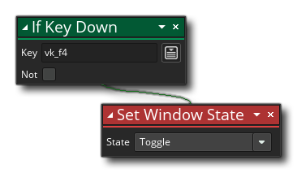

Beschreibung
Mit dieser Aktion können Sie den Status des Spielfensters entweder auf Vollbild oder Fenster festlegen. Hier gibt es drei Möglichkeiten:
- Toggle - Wenn diese Option ausgewählt ist, wird bei jedem Aufruf der Aktion das Fenster zwischen Vollbild- und Fensterstatus umgeschaltet
- Vollbild - Damit wird das Fenster aus dem Fensterzustand in den Vollbildmodus geschaltet
- Windowed - Dies bewirkt, dass das Fenster im Vollbildmodus in einen Fensterzustand zurückkehrt
Beachten Sie, dass das Aussehen des Spiels im Vollbildmodus von den Spieloptionen - Grafikeinstellungen für Ihre Zielplattformen abhängt. Wenn das Spiel keinen Mechanismus zur Anpassung an verschiedene Seitenverhältnisse und Auflösungen hat, können Sie Stretching (wenn das Spiel Option wird auf Full Scale gesetzt ), oder Sie können schwarze Balken hinzufügen (wenn die Spieloption auf "Seitenverhältnis beibehalten" eingestellt ist ). Im Allgemeinen sollten Sie, wenn Sie nichts zur Verfügung haben, um mit verschiedenen Auflösungen zu arbeiten, das Seitenverhältnis beibehalten für die Zielplattformen verwenden, die Sie kompilieren möchten.
Aktionssyntax:

Argumente:
Streit Beschreibung State Der zu setzende Fensterzustand (siehe oben für Optionen)
Beispiel:
Der obige Aktionsblockcode schaltet den Fensterstatus bei jedem Drücken der F4-Taste zwischen Vollbild und Fenster um.